Instellen VPN
Handleiding Instellen VPN
Onderstaande handleiding helpt je bij het opnieuw instellen van je Sophos VPN Client software.
Let op dat je alleen toegang hebt tot de VPN Users Portal vanaf een locatie van Monta.
Dit werkt dus niet vanaf thuis.
Inhoudsopgave
1. Deinstalleren oude VPN-software
2. Installeren nieuwe VPN-software
3. Downloaden configuratiebestand
4. Importeren congifuratiebestand
5. Aanmelden met behulp van de VPN
Deinstalleren oude VPN-software
Deinstalleer eerst de oude Sophos VPN Software
Startbutton Instellingen Apps.
Zoek in de lijst met applicaties naar de Sophos SSL VPN Client (De versie kan verschillen met onderstaand voorbeeld)
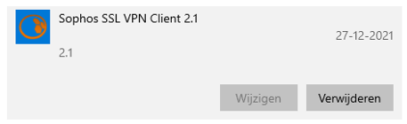En klik op verwijderen.
Installeren nieuwe VPN-software
De nieuwe software voor de VPN-Connectie vind je in de Bedrijfsportal.\
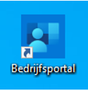
Bij de aanbevolen apps vind je de nieuwe Sophos Connect software.
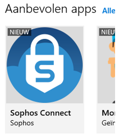Rechts bovenin het scherm vind je de "Installeren" -- knop
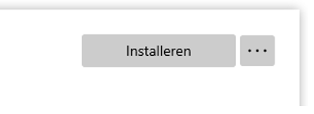Downloaden configuratiebestand
Het configuratiebestand is beschikbaar in de Users Portal van de Sophos VPN.
Open een browser.
Ga naar https://vpn.montapacking.nl�
Vul in dit scherm je loginnaam in (zonder @monta.nl)
De tweede regel is voor je wachtwoord + DUO-code
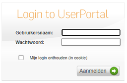Klik op Inloggen.
Ga naar het tabje "remote Acces" en klik daar op download bij de configuration file (zie onderstaande afbeelding).
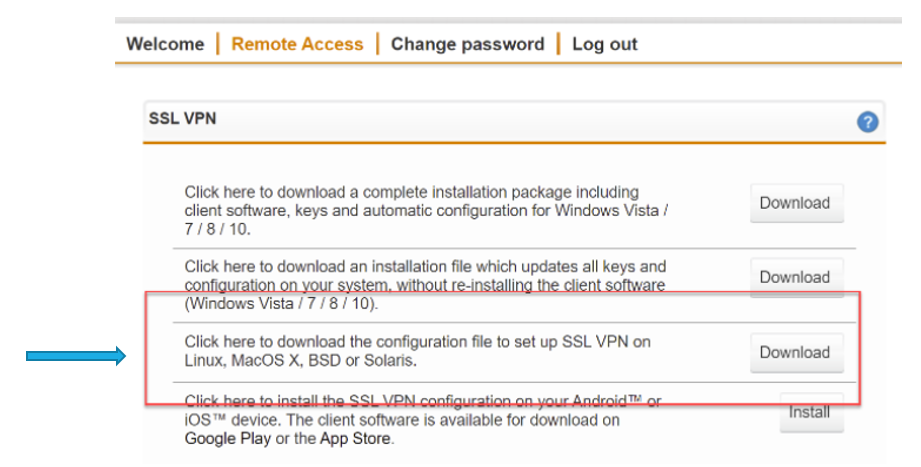Klik op Afmelden om de sessie te sluiten.
Importeren congifuratiebestand
Start de Sophos Connect Applicatie vanaf je bureaublad
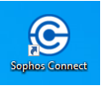Klik op "Importeren Connection"
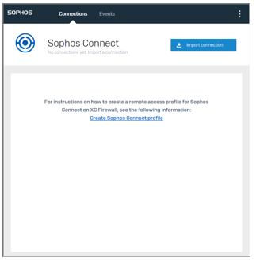En selecteer de OVPN-file die je in punt 3 hebt gedownload.
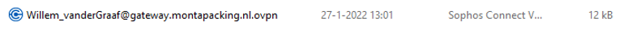Als je Sophos Connect opnieuw start ziet het er uit als onderstaande afbeelding
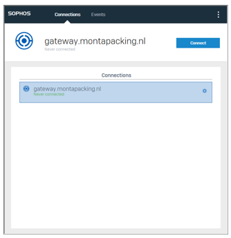Aanmelden met behulp van de VPN
Start de Sophos Connect Applicatie vanaf je bureaublad
Klik op "Connect"
Vul in dit scherm je loginnaam in (zonder @monta.nl)
De tweede regel is voor je wachtwoord + DUO-code
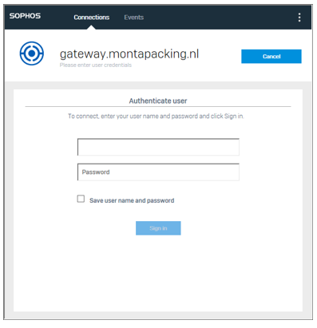